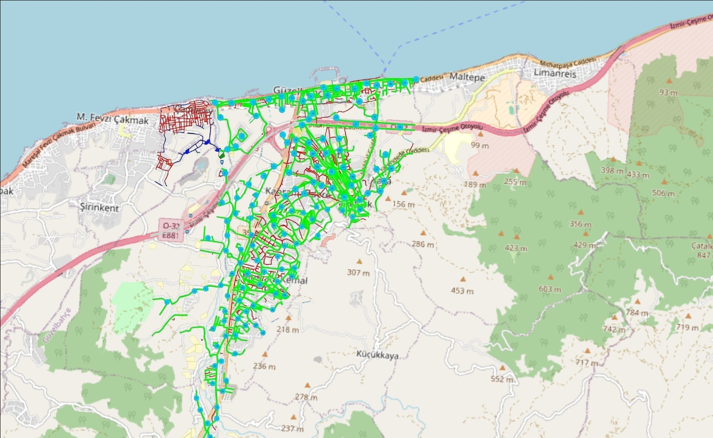
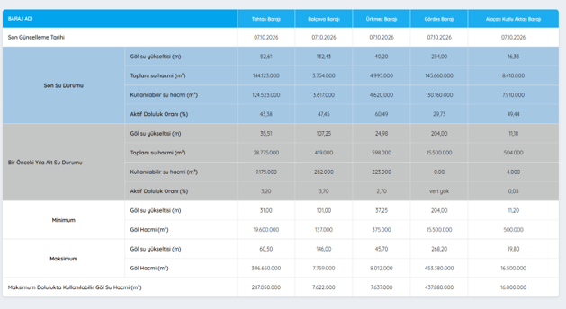
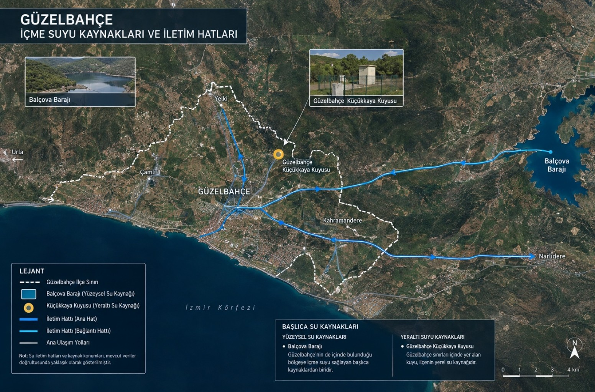

İZSU Su Kaynakları
Baraj doluluk oranları, su kaynakları listesi ve Güzelbahçe su altyapısı metrajı
Balçova Barajı Doluluk
%48,20
Aktif Doluluk Oranı
Kullanılabilir Su
3,674 mn m³
Milyon Metreküp
Yerel Kaynak (Küçükkaya)
265 Kişi
Ek Kapasite Sağlandı
Barajların Aktif Doluluk Oranı (%)
Balçova Barajı Hacim Analizi (Milyon m³)
Kullanılabilir Su: 3,674 milyon m³
(Toplam su: 3,811 milyon m³ · Maks. hacim: 7,759 milyon m³)
(Toplam su: 3,811 milyon m³ · Maks. hacim: 7,759 milyon m³)
Türlerine Göre Su Kaynağı Sayısı
Güzelbahçe ve İzmir Bölgesel Su Kaynakları Listesi
Aktif kullanılan yüzeysel ve yeraltı su kaynaklarının detaylı dökümü
| KAYNAK | TÜRÜ | GÜZELBAHÇE İLE İLİŞKİSİ | GÜNCEL DURUM / PLANLAMA |
|---|---|---|---|
| Balçova Barajı | Baraj | Doğrudan İlişkili | Güzelbahçe'nin de içinde bulunduğu eski metropol su sisteminin ana kaynaklarından biri. |
| Tahtalı Barajı | Baraj | Bölgesel Kaynak | İzmir'in ana bölgesel içme suyu kaynağı, ortak sisteme su sağlamaktadır. |
| Gördes Barajı | Baraj | Bölgesel Kaynak | Ortak sisteme bağlı; Güzelbahçe'ye özel değil, dönemsel olarak kullanılıyor. |
| Güzelbahçe Küçükkaya | Yerel Kuyu | Doğrudan İlçe İçi | 2023'te açılan yeni içme suyu kuyusu ile yaklaşık 265 kişiye alternatif lokal kaynak. |
| Göksu Kuyuları | Yeraltı Suyu | Ortak Sistem | Güzelbahçe'nin de dahil olduğu ortak İzmir su sisteminde kullanılmaktadır. |
| Halkapınar & Sarıkız & Buca-Sarnıç | Yeraltı Suyu | Bölgesel Kaynak | 2026 boyunca İzmir'in ortak sistemine üretim sağlayan bölgesel yeraltı su kaynaklarıdır. |
Su Altyapısı Metrajı
Güzelbahçe içme suyu, atıksu ve yağmursuyu altyapısının metrajı ve dağılımı
| Altyapı Türü | Metraj | Oran (%) |
|---|---|---|
| İçme Suyu | 173 | 54,1 |
| Atıksu | 134 | 41,9 |
| Yağmursuyu | 13 | 4,1 |
Metraj Karşılaştırması
Metraj Dağılımı (%)

Bölgesel Su Altyapısı Ek Görselleri
Görsellerin üzerine tıklayarak büyütebilir, mouse tekerleğiyle yakınlaştırıp sürükleyerek inceleyebilirsiniz.


Veri Kaynağı: İZSU Günlük Su Üretimi & Açık Veri Portalı (05 Ekim 2026)